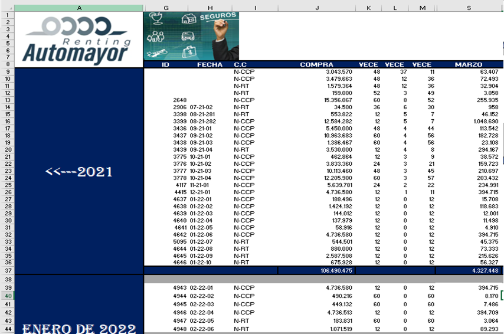

El proceso de amortizacion consiste en reconocer los costos y gastos durante el tiempo de duracion de los inventarios,intagibles y diferidos el cual esta determinado por el plazo de los contratos de cada uno de los clientes de la compañía
INSTRUCTIVO AMORTIZACION DIFERIDOS
1. Descargar movimiento el de las compras realizadas en el mes anterior desde el programa contable ( Zeus)
2. Organizar informacion excel por tercero-cliente y und de negocio
Una vez descargado el movimiento de la cuenta del periodo correspondiente se procede a la organización de la informacion que corresponde a las compras del mes, Informacion que se copia a la plantilla creacion de diferidos.
Nota: No se debe incluir el movimiento de amortizacion del mes anterior por consiguiente esta informacion se elimina.
Ordenar informacion en la plantilla excel (creacion de diferidos) de la siguiente manera.
- Eliminar movimiento que corresponde a amortizacion del mes anterior
- Organizar informacion por unidades de negocio
- Organizar informacion por clientes (descripcion)
- Organizar informacion por terceros a quien se le realizo la compra
- Agrupar compras que corresponde al mismo,cliente,und de negocio y tercero (compra)
- Sumar el valor de las compras que se agruparon en la columna K
- Validar el plazo del cliente, informacion que se obtiene del archivo base renting 2021 completa
- Verificar sumatoria de las compras realizadas
3. Apertura y creacion de diferidos en Zeus
4. Revision de creacion de Diferidos
Una vez creado la totalidad de los dferidos del mes, se descarga la informacion correspondiente para validar y verificar que la apertura de los diferidos contenga la informacion de forma adecuada y pertinente con el fin de que se registre la informacion correctamente de forma automatica, mitigando inexactitudes que generen diferencias con el cuadro control excel de amortizacion de diferidos.
la informacion a validar es la siguiente( comparativo archivos: creacion diferidos y revision creacion diferidos)
- Cuenta de compra inventario, intangible o diferido
- Cuenta gasto o costo (contrapartida compra)
- Centro de costo: validar que todas las cuentas de gasto y costo contenga este dato para que el proceso de amortizacion se pueda correr
- Porcentaje: 100%
- Fuente: Validar que la fuente este acorde a la unidad de negocio
- Valor: Corresponde a las compras realizas
- Periodo: Corresponde al plazo de contrato de cada cliente
REVISION DE CREACION DE DIFERIDOS
Adicionalmente se deben anular aquellos diferidos que registraron una devolucion o nota credito y asi mismo reversar la amortizacion registrada en meses anteriores
NOTA: Validar que la totalidad de las compras del mes se encuentren con la apertura del diferido correspondiente para proceder con el proceso de amortizacion
5. Proceso de amortizacion diferidos en Zeus
Posteriomente a la creacion de todos los diferidos del mes se procede a correr el proceso de amortizacion.
Paso a paso proceso amortizacion
-
Diligenciar informacion: Marcacion unidades de neogcio, fecha generacion de diferidos y fecha de vencimiento contrapartida
DILIGENCIACION DE INFORMACION CON FECHA DE LA CONTRAPARTIDA -
Aplicar robot a comprabantes de amortizacion que se registraron desde el libro principal Zeus para que esta informacion igualmente quede reflejada en el libro
5.6.1 Consultar comprobante :Transacciones/Contabilidad/ Notas contables
CONSULTACION DE COMPROBANTE
5.6.2 Consultar cada uno de los comprobantes de amortizacion y seleccionar la opcion aplicar Robot
CONSULTACION DE COMPROBANTES
6. Cuadro control excel - Amortizacion de Inventario y licencias por und de negocio
El cuadro excel de amortizacion de inventario y liencias nos permite llevar un control de la informacion y asi mismo validar que el proceso se este ejecutando a los lineamientos correspondientes corroborando las compras,las notas creditos o devoluciones, el valor amortizado por cada diferido, los saldos por cuenta y por unidad de negocio
CUADRO DE CONTROL-
Adicionar la informacion discriminada de cada uno de los diferidos creados que corresponden al mes inmediatamente anterior.
ADICION DE INFORMACION AL CUADRO DE CONTROL -
Incluir el valor de las compras del mes actual por unidad de negocio (la discriminacion y creacion de diferidos se realiza en el mes siguiente)
INCLUYIMIENTO DE INFORMACION PARTIDAS -
Formular el valor de la amortizacion del mes actual de los diferidos que aun se han amortizado en un 100% sin incluir los diferidos que registran una devolucion
ADICION DE INFORMACION AL CUADRO DE CONTROL  -
Validacion de Saldos de cuadro control de amortizacion excel vs informacion contable registrada
6.4.1
Descargar balance zeus general de todas las und de negocio del mes actual en excel y adicionarlo en la hoja saldos balance Zeus6.4.1.2Digitar informacion, marcar und de neg, fechas, rango de cuentas, reporte profesional por reporte y pagina
6.4.3Validar en la pestaña comparativo las diferencias que se tienen sean minimas (redondeo en amortizacion) y asi corroborar que la informacion cruza con contabilidad
6.4.4Posteriormente a la generacion de balances definitivos del mes actual de RT y CCP se pasa la informacion all archivo excel de amortizacion de inventarios y licencias en la pestaña "saldos balance excel" de la siguiente manera
Cuadro izquierda: Balance RT Incluye todas las unidades de negocio
Cuadro central : Balance CCP
Cuadro derecha: Formulado que corresponde a la unidad de negocio RT
6.4.5Validacion saldos por unidades de negocio
En el archivo excel amortizacion de inventario y licencias en la pestaña "saldos por und de neg" podemos validar que los saldos por cada unidad de negocio cruce con con los balances definitivos del mes
6.4.6Una vez validada la informacion cruza con contabilidad se procede a guardar el informe en la carpeta correspondiente en el drive